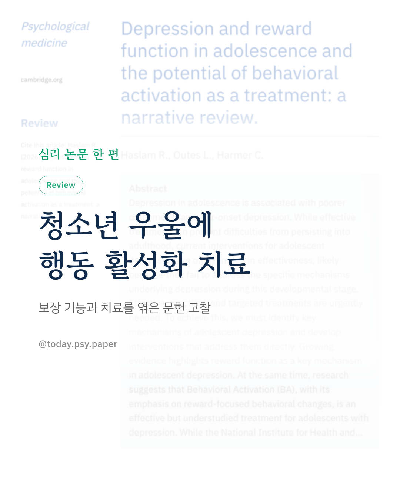
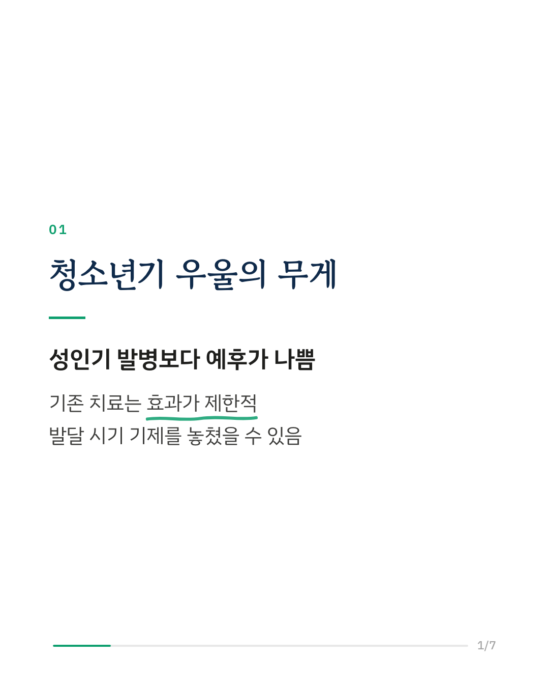
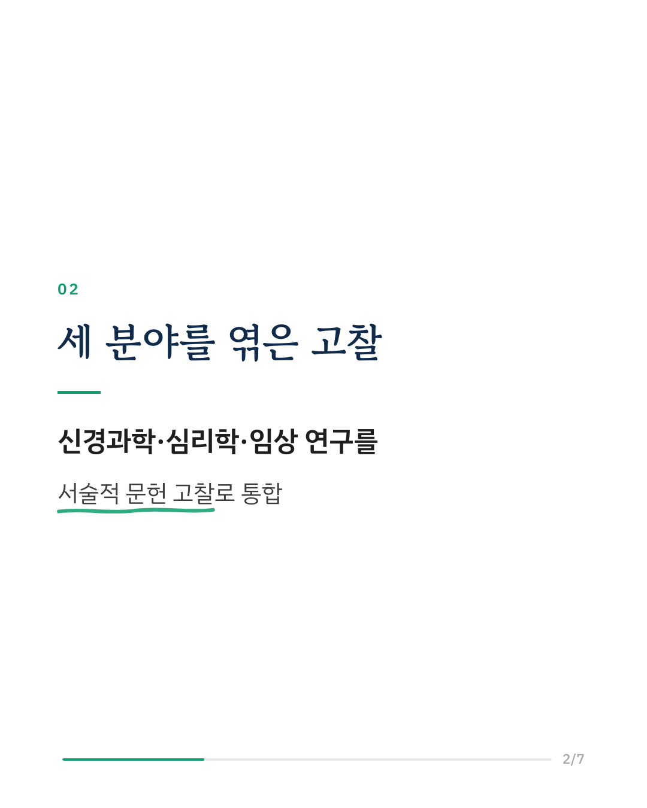
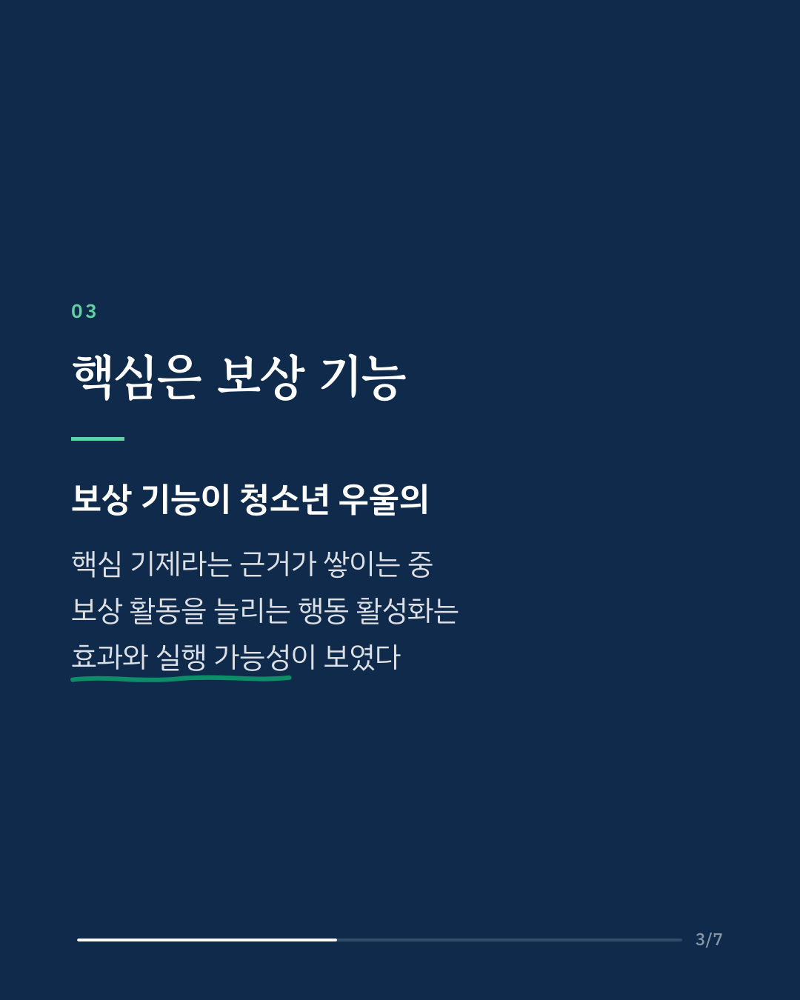
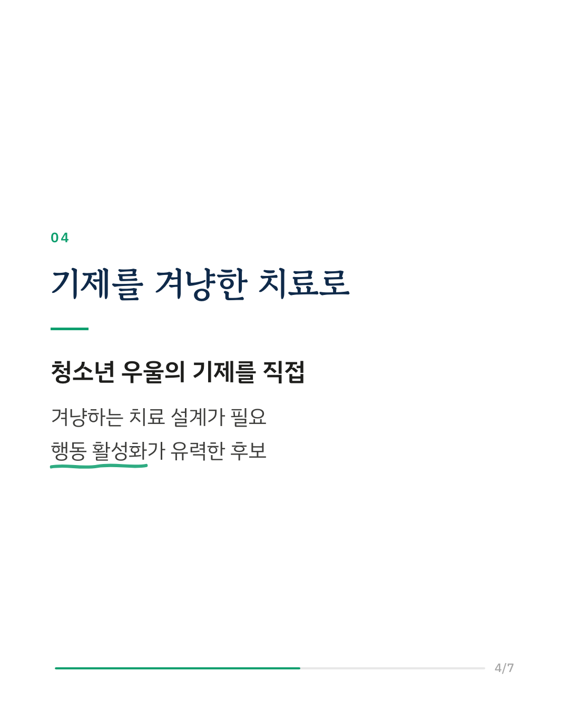
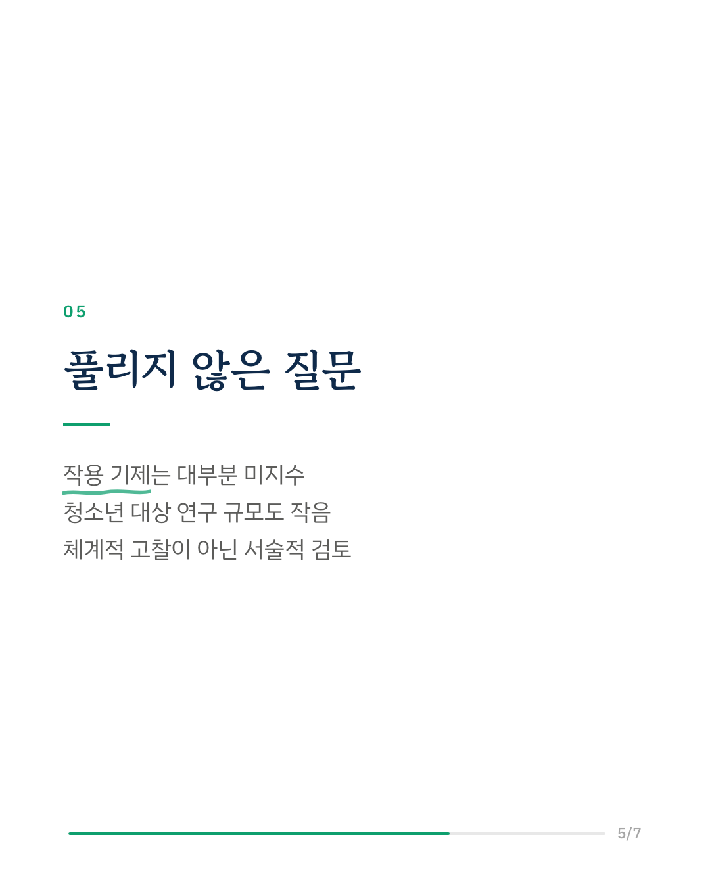
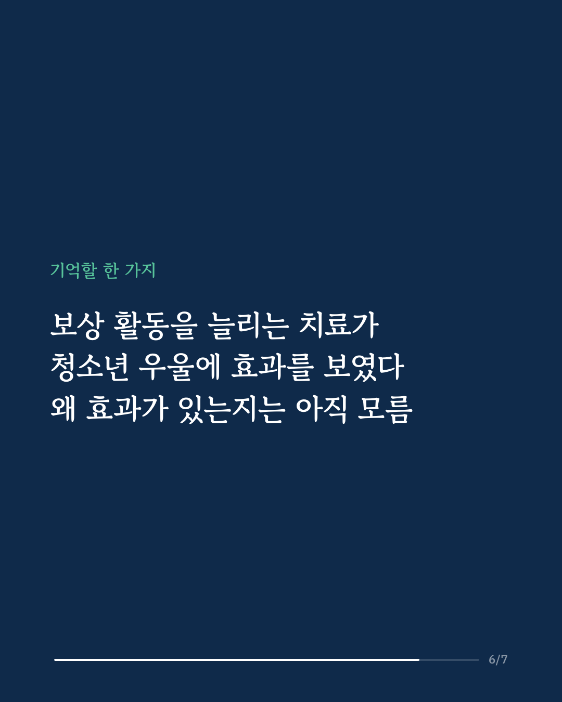
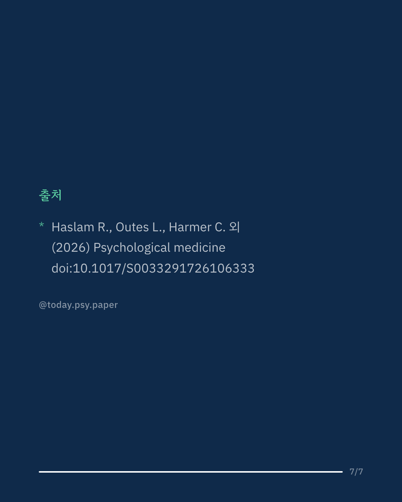

청소년기 우울증은 성인이 되어 시작된 우울증보다 예후가 나쁜 편입니다. 그런데 지금의 치료는 청소년에게 효과가 제한적이고, 연구진은 이 시기 우울의 고유한 기제를 다루지 못하기 때문일 수 있다고 봅니다. 이 리뷰는 신경과학·심리학·임상 연구를 함께 엮어, 청소년 우울에서 보상 기능의 역할과 행동 활성화 치료를 살폈습니다. 행동 활성화는 즐거움이나 성취감을 주는 활동을 일상에 늘려 가는 치료입니다. 보상 기능이 청소년 우울의 핵심 기제라는 근거가 늘고 있었고, 행동 활성화는 청소년에게도 효과와 실행 가능성의 근거가 있었습니다. 다만 행동 활성화가 청소년에게 왜 효과가 있는지는 대부분 밝혀지지 않았고, 가장 좋은 전달 방식을 두고 분야마다 시각이 엇갈렸습니다. 영국 국립보건임상연구원(NICE)이 2019년 이 주제의 연구를 요청했지만 근거는 아직 규모가 작습니다. 연구진은 청소년 스스로 이 치료에 어떻게 참여하고 싶어 하는지도 물어야 한다고 말합니다. Psychological Medicine (2026), 'Depression and reward function in adolescence and the potential of behavioral activation as a treatment: a narrative review.' DOI: 10.1017/S0033291726106333 #임상심리 #정신건강정보 #심리학연구 #논문리뷰 #청소년우울 #행동활성화 #우울증
python3 publish.py 42910461